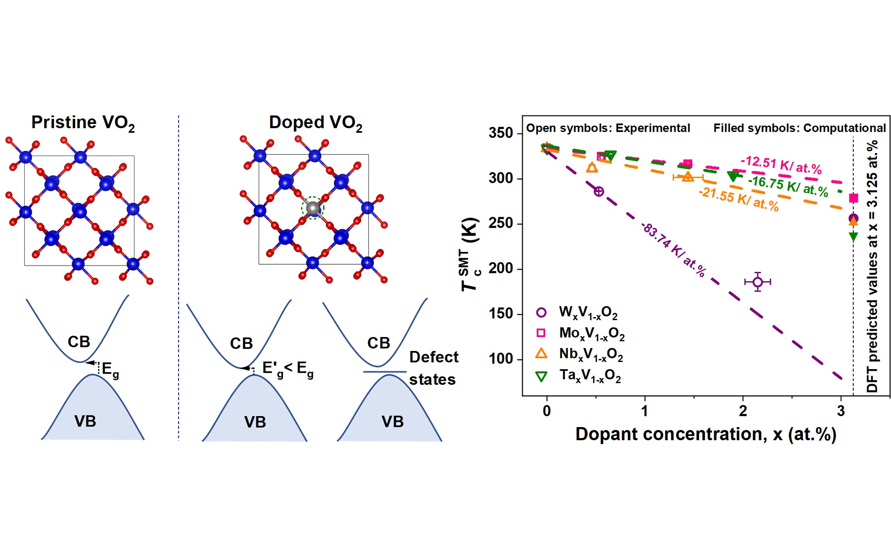

Research Matrix
Chemical Strain-Induced Structural MIT in VO₂
Substituted V⁴⁺ lattice sites with larger-radius, higher-valency cationic dopants to depress the transition temperature toward near-room-temperature levels. Synthesized via RF magnetron sputtering and elucidated through first-principles DFT across strained M₁/R polymorphs.
Thermochromic Smart Glazing
Translating doped VO₂ films into visibly transparent, high-stability infrared shielding coatings for energy-efficient architecture.
First-Principles DFT
Modeling thermodynamic stability, formation energies, and electronic density of states (VASP, Quantum ESPRESSO) to map orbital dynamics.
Functional Oxide Thin Films & Device Integration
Currently advancing the frontier of functional transition-metal oxide coatings at the Research Institute for Electronic Science (RIES) under Prof. Hiromichi Ohta. Exploring thermal conductivity, epitaxial strain, and carrier transport in correlated electron systems.
Visual Abstracts

[Image: jalcom-26.png]'">